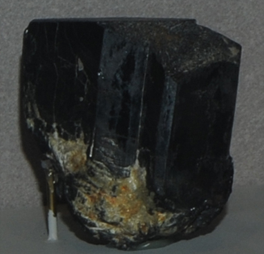

|

| (Fe,Mn)Nb2O6
This sample of columbite is displayed in the Smithsonian Museum of Natural History. Columbite is an oxide mineral which contains niobium and manganese with the composition (Fe,Mn)Nb2O6. The sample at left is about 14 cm across and is from Powhatan, Virginia.
See also manganocolumbite and manganotantalite.
|